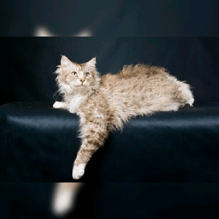
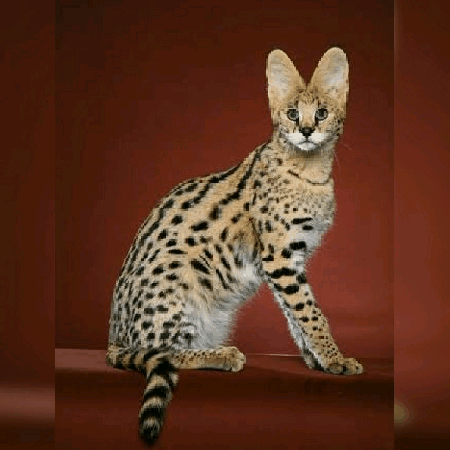
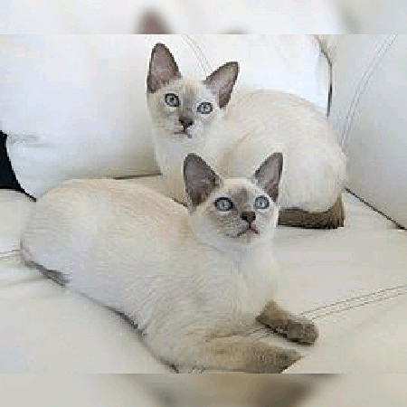
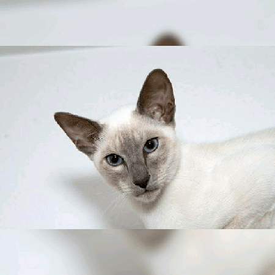

Cães
Felinos
Peixes
Abissímo:
Os gatos abissínios possuem origem misteriosa,
sendo mais provavelmente provenientes do Egito ou Etiópia.
Caracterizam-se por terem comportamento tímido e discreto, com miados
baixos. O corpo é esguio e musculoso, o que lhes dá agilidade.
Angorá:
Os gatos da raça angorá surgiram na região de Ankara na Anatólia,
Turquia central, e são conhecidos na Europa desde o início do século XVII.
Os membros dessa raça são animais muito dóceis e amistosos.
Balinês:
Parentes próximos dos gatos siameses, os gatos balineses só foram reconhecidos
como raça separada dos siameses em 1970 - até então eram considerados apenas uma
variação dos siameses, com pelos especialmente longos e felpudos.
Bengal:
O Bengal é uma raça recente, derivada de cruzamentos induzidos entre gatos domésticos
e o gato-leopardo asiático. Tal cruzamento só foi possível devido ao fato do gato-leopardo
possuir o mesmo número de cromossomos do gato doméstico, o que tornou possível a realização
de cruzamentos que originassem descendentes férteis.
Bombay:

O Bombay é um gato originário dos Estados Unidos da América.
Surgiu nos anos 1960 por meio de cruzamentos entre diferentes gatos pretos de pelo curto americano.
Esses gatos apresentam a pelagem completamente negra e curta, com textura aveludada, sem a presença de pontos brancos.
Burmês:
Os gatos burmeses são originários da Tailândia. Os atuais descendem, em sua maioria, do cruzamento de uma
única matriz que foi levada aos Estados Unidos e cruzada com um siamês.
Podem ter pelugem curta e acetinada
nas cores marrom, chocolate, azul, lilás e platina.
Chartreux:
Os gatos Chartreux apresentam coloração cinza-azulada,
com pelos curtos, densos e grossos. Os gatos dessa raça são muito silenciosos,
de modo que raramente miam. São muito ativos e necessitam de bastante espaço físico
para correrem e exercitarem-se.
Colorpoint:
Colorpoint Shorthairs é uma raça de gato originária dos EUA,
eles são os primos de primeiro grau do Siames e em uma
Associação de Criadores de Gatos é o único registro que os
reconhece como uma raça independente.
Cornish Rex:
O Cornish Rex é um gato de pelo curto e ligeiramente cacheado,
originário da Inglaterra. Possui um aspecto rústico e é considerado
um excelente animal de estimação uma vez que convive muito bem com
os humanos, mesmo no caso da presença constante de estranhos.
Curl Americano:
O Curl Americano é mais uma das raças nativas dos Estados Unidos.
O aspecto mais conhecido e marcante da raça são suas orelhas dobradas
ou “enroladas” (Curl), decorrentes de uma mutação genética. Esse gene
pode ser transmitido aos descendentes por apenas um dos pais.
Devon Rex:
O Devon Rex é uma raça de gatos de pelos curtos e ondulados.
É considerado um excelente animal de estimação uma vez que
convive muito bem com os humanos, mesmo no caso da presença constante de estranhos.
Himalaio:
O gato himalaio foi criado por meio de cruzamentos consecutivos
entre espécimes das raças persa e siamês. Desse modo, combinam a
vasta e sedosa pelagem dos persas com o porte e a sofisticada marcação
de cores presentes nos siameses.
Javanês:
Gato de médio porte, musculoso e com estrutura alongada.
A pelagem é de comprimento mediano e brilhante. Na ponta da
cauda os pelos são um pouco mais longos, formando uma plumagem.
LaPerm:

O gato LaPerm foi registrado em 1982, nos Estados Unidos da América.
Trata-se de um felino de pelagem longa e cacheada, com espirais lembrando um saca-rolhas.
Apresenta comportamento bastante interativo.
Maine Coon:
O Maine Coon é um gato norte-americano, conhecido pelo
seu avantajado tamanho em relação às demais raças.
Foi primeiramente reconhecido como raça oficial
no estado norte-americano do Maine, onde era famoso pela sua
capacidade de caçar ratos e de tolerar climas rigorosos.
Manx:
O manx ou manês é uma raça originária da Ilha
de Man cuja principal característica é a ausência de cauda.
Trata-se de uma raça com temperamento dócil e brincalhão.
São gatos muito ativos, que possuem grandes habilidades de saltos.
Mau Egípcio:
O Mau Egípcio é uma raça que descende diretamente
dos gatos da época do Antigo Egito. Podem ser vistos
em papiros e construções egípcias anteriores a 1000 a.C.
Mist Australiano:
O Mist Australiano é uma raça de gatos desenvolvida na Austrália.
A criação desses animais teve início no ano de 1976 por meio de
cruzamentos sucessivos entre abissínios, siameses e diversos gatos de pelo curto.
Munchkin:
__O Munchkin é um gato de pernas curtas e corpo alongado.
Em função desse formato peculiar, é apelidado de Basset Hound felino.
É dócil, sociável e amável. É ativo como outros gatos, mas não pula
tão alto devido à pequena altura
das suas pernas, que chegam a medir apenas um terço do
tamanho observado nas outras raças.
Norueguês da Floresta:
Como o próprio nome diz, o gato Norueguês da Floresta se ,
originou nas áreas florestais da Noruega. A necessidade de
se abrigar durante os invernos frios da Escandinávia
transformou seu manto em uma espécie de cobertor macio,
protegendo-o do vento, do frio e da umidade da neve.
Persa:
__Os gatos persas originaram-se na antiga Pérsia (atual Irã).
No século XVII foram levados à Itália, onde sua pelagem macia
e brilhante fez com que imediatamente ganhassem popularidade.
Atualmente, essa é a raça de gato doméstico mais popular no
Brasil e na maior parte do mundo.
Pixie-bob:
__A origem é bem recente e remete à cidade de Washington (Estados Unidos), em 1985.
O Pixie-Bob tem um passado cercado de muitos de mitos.
Uma das lendas conta que a raça
teve origem a partir do cruzamento entre gatos domésticos e linces selvagens.
Ragdoll:
__O gato ragdoll foi desenvolvido em meados dó século XX,
nos Estados Unidos da América. Seu nome, que significa
boneca de pano em inglês, indica uma característica peculiar
desse animal que é relaxar completamente quando o pegamos no colo.
Ocicat:
__O gato Ocicat surgiu nos Estados Unidos em 1964,
quando uma criadora comercial realizava cruzamentos
entre Abissínios e Siameses. Quando ela cruzou um
abissínio-siamês com um com um siamês chocolate point,
obteve um gato com a pelagem semelhante a de um jaguar.
Russo Azul:
__O Russo Azul é uma raça natural que pode ter se originado no
porto de Arkhangelsk, na Rússia. Acredita-se que os
marinheiros levaram os Azuis Russos das Ilhas Arcanjo
para a Inglaterra e Norte da Europa na década de 1860.
Sagrado da Birmânia:
__O Gato Sagrado da Birmânia recebeu esse nome por descenderem
diretamente de uma linhagem de gatos que viviam dentro dos
monastérios budistas birmaneses. Segundo a lenda budista,
existia em um determinado templo, um gato branco, de pelo
comprido, que era o fiel companheiro de um sacerdote.
Savannah:

__O Savannah é um animal híbrido derivado de cruzamentos
entre o gato doméstico e o serval africano (Leptailurus Serval).
Possui esse nome pelo fato de o serval habitar as savanas.
Pelo fato de a raça ser resultante do cruzamento de espécies
diferentes, a maior parte dos animais é estéril,
o que a torna uma raça muito rara.
Scottish Fold:
O Scottish Fold é um gato originário da Escócia.
Possui um porte robusto, pelos macios e face bem arredondada.
A sua característica mais marcante está nas orelhas que, ao
contrario dos demais gatos, são pequenas e com pontas dobradas para dentro
Tonquinês:

O Tonquinês é uma raça desenvolvida no início do século XX,
a partir do cruzamento entre gatos siameses e gatos birmaneses.
No início, eram conhecidos como "siameses dourados", mas,
após diversas gerações, a raça conseguiu reconhecimento próprio.
Selkirk Rex:
No ano de 1987, nos Estados Unidos, o cruzamento uma gata
de pelagem normal com um gato de pelos encaracolados originou
uma fêmea de pelos encaracolados.
O Selkirk Rex é conhecido por seu pelo que lembra o de
uma ovelha.
Siamês:

Os Gatos Siameses receberam esse nome por serem originais
do antigo Sião (atual Tailândia). Trata-se de um gato de psicologia complexa,
frequentemente imprevisível em suas reações. Por isso precisa viver em espaço amplo,
onde possa dar seus passeios noturnos.
Siberiano:
O Gato Siberiano, também conhecido como Gato dos bosques da Sibéria é uma raça de
gato criada de forma natural nos bosques da Rússia pelo cruzamento de gatos domésticos e
de gatos selvagens. É um gato grande de pelo longo que se destaca sobre
outras raças de gatos por seu caráter sociável.
Singapura:
Originário de Singapura, a falta de contato com a civilização deu a este
gato oriental um temperamento reservado. Nativamente conhecido de forma
pejorativa como gato do esgoto, prefere ser doméstico, pacífico
e não requer exigências.
Somali:
O Somali é um gato abissínio de pelo muito longo. Essa raça surgiu
naturalmente derivada de uma mutação observada em alguns espécimes
de abissínios na década de 1950 nos EUA.
Sphynx:
O Sphynx é uma raça originária do Canadá. Ficou famosa
por não possuir pelos, sendo assim muito procurado por
pessoas que gostem de gatos, mas possuam alergia a seus pelos.
Toyger:
O Toyger é uma raça que resulta dos cruzamentos sucessivos ,
entre espécimes de pelo curto. Recebeu esse nome por se
assemelhar a um tigre de pelúcia (Toy Tiger).
Apenas no ano de 2007 que essa raça foi oficialmente reconhecida pela TICA.